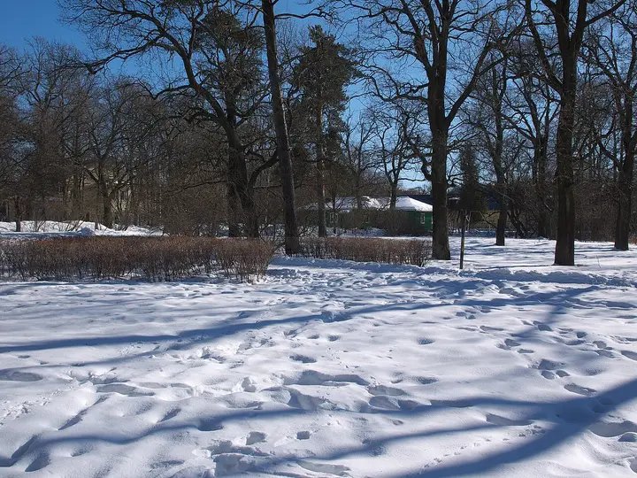

Фото: t-rex, CC BY 3.0 · Wikimedia Commons
Парк · Пригороды
Парк «Дубки»
Петровская дубовая роща на мысу у залива: песчаный берег, сосны и закаты прямо над водой — легко доехать на электричке.
- ₽ · до 1 500 ₽ на человека
- Новое в каталоге
- в 1 плане
Позвать сюда: Парк «Дубки»Открыть в каталоге: Парк «Дубки»Маршрут до места: Парк «Дубки»
Адрес и детали
- Адрес
- Сестрорецк, Большой Литейный пер., 37
Открыть на Яндекс Картах (в новой вкладке) - Станция
- ж/д Сестрорецк
- Район
- Пригороды
- Цена
- до 1 500 ₽ на человека
- Проверено
- работает — проверили в октябре 2026
Планы с этим местом 1
- Парк «Дубки» · Парк · ж/д Сестрорецк
Петровская дубовая роща на мысу, песчаный берег и сосны — электричка до Сестрорецка, и солнце садится прямо над водой.
Открыть план: Дубки: закат над заливомПозвать сюда: Дубки: закат над заливом
Фото: t-rex, CC BY 3.0 · Wikimedia Commons

Входит в подборки
Как позвать
- Выбери план, место или событие — в карточке адрес, цены и маршрут в Яндекс Картах.
- Нажми «Позвать сюда» — соберётся приглашение-игра для свидания или голосование для компании.
- Отправь ссылку в любой мессенджер: тебе ответят, а компания отметит, куда и когда может. Бесплатно и без регистрации.